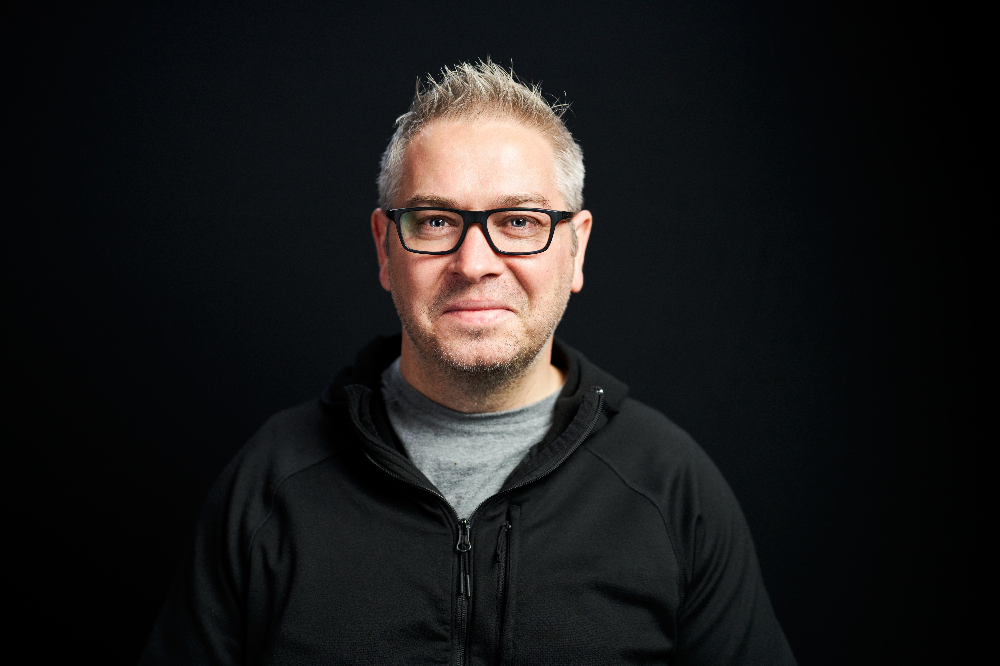
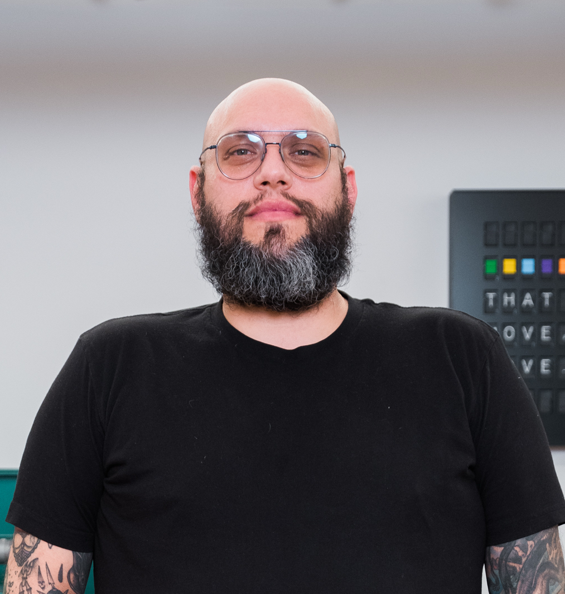
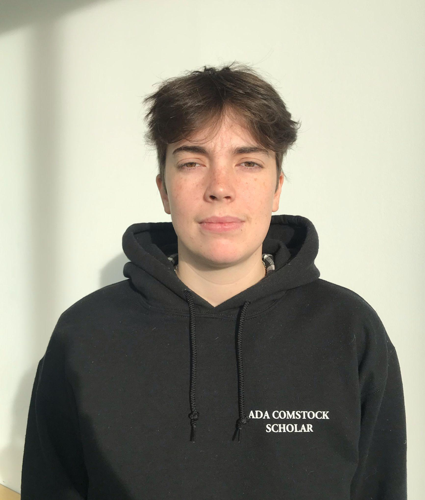
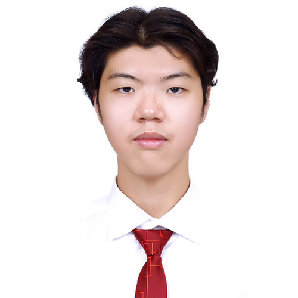
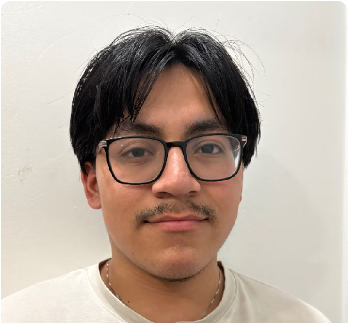
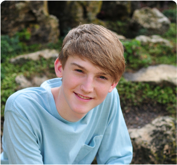
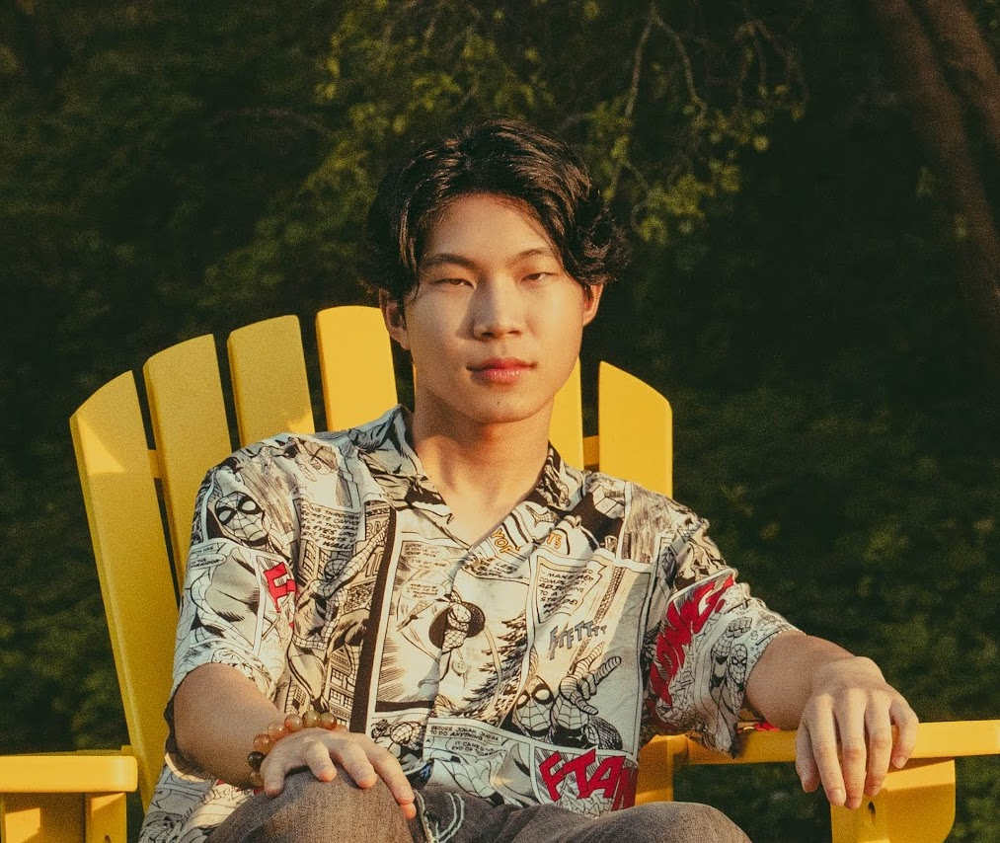

MjolnirAffiliates
A team of students and makers across the world invarious disciplines.

Noel Joyce
Assistant Professor Noel Joyce became a wheelchair user as a result of a mountain biking accident that ended his career in the military over 20 years ago, since then he went on to become an industrial designer working with over 200 startups and creating a number of his own.
Moving on to the field of education at NYU he started Project Mjolnir as a result of his frustration with the barriers to the sport of adaptive mountain biking. Noel is a disability advocate, educator and innovator who views the world of design through a unique lens.

Phil Caridi
Phil Caridi is a Brooklyn-based artist, industrial designer, and educator specializing in both digital and traditional fabrication. Phil has a BFA in industrial design from the Savannah College of Art and Design (SCAD) and an MPS from ITP.
His artistic work focuses on the abstraction of time, the abstraction of physical movement from digital inputs, and kinetic installations. Phil has been developing a concept relating to long-form/short-duration installation work. Phil is an avid mountain biker, action figure collector, a lover of comics, and a fan of all things musically heavy and slow.

Bailey Butterworth
I am the mechanical design team lead working on the subteam designing a new tadpole (1 wheel in the back, 2 in the front) recumbent trike. I'm learning a lot about tricycle mechanics and CAD'ing a better, more affordable option for people who love mountain biking.
I have a background in engineering and operations and want to use clever designs to improve people's lives.

Jonathan Teng
I am the lead for the electronics sub-team, and I am currently developing the embedded systems to acquire logged telemetry data for the bike.
As an electrical engineering student with a focus on signal processing, I wish to process the gathered data to identify rider characteristics to detect and improve imperfections in the mechanical system.

George Criollo
I am a mechanical design member contributing to the electromechanical shifting of the bike. I have a background in Mechanical Engineering and am passionate about creating innovative designs and products that can help the world around me.
My work includes CAD development, design improvements, and testing with other team members to ensure we build the most effective solution.
Deema Ali
As a member of the mechanical team, I focus on the ergonomic layout of our adaptive mountain bike. My work centers on designing a versatile seating system that transitions between standard and kneeling positions.
I'm responsible for optimizing the spatial layout to fit the bike's dimensions while ensuring the frame provides maximum support and stability for the rider in both modes.

Carter Downs
I am a Project Associate supporting the Mechanical team. I am currently working on designing a modular chain tensioning system for the bikes, tasked with the 3D-Modeling and production.
I have a background in mechanical engineering and am passionate about using technology to assist people's quality of life.

Edward Staats
I am Edward Staats, I study a Math & Physics at Tandon. I joined the mechanical team in spring 2025 because I have a passion for mountain biking, so being able to help more people have access to the sport while improving my own engineering skills seemed like a great opportunity.
This semester, I am studying abroad in NYU Shanghai, where I will be able to work face-to-face with Noel on his "top-secret" projects.
Jerry Wen
blahblah

Garman Xu
I am a Integrated Design Media student interested in the intersections of design, disability studies, and healthcare.
I was drawn to the project's ambitious goals and its members energy. I am currently in charge of making the website and curating our media communicatons.
Charice Huang
Charice is a senior at NYU Gallatin, where she designed her own concentration in Business & Technology. She likes to think in superposition, holding philosophy, psychology, and quantum cognition alongside her work in dance choreography, marketing strategy, startup consulting, and brand ambassadorships.
Across her passions, she’s driven to create accessible opportunities for her communities. At Project Mjolnir, she is driven to help an open-source initiative reach further so more riders can get into adaptive mountain biking!